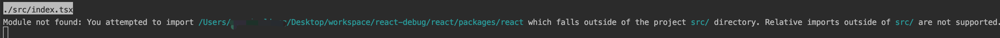
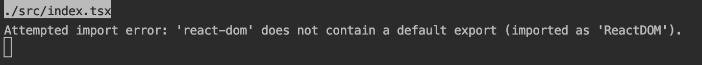
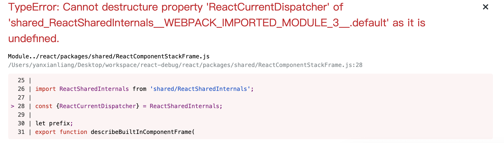
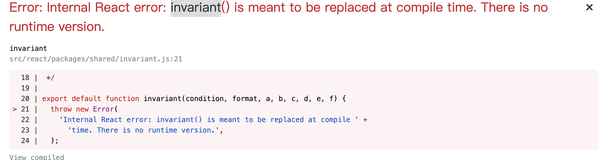
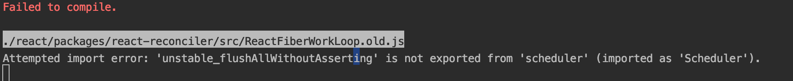
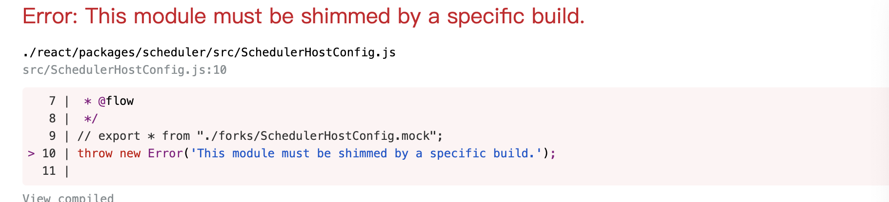

前言
React框架一直依赖都比较神秘，其原理大部分人都是通过博客进行了解，但是这种了解有局限性，博客中写的并不一定详细，稍微误差就容易造成理解歧义，而React源码的阅读相对来说比较困难，并不想vue源码一样直观，而我们想要详细了解一个框架源码就必须要对源码进行调试，通常项目中虽然也能调试，但是调试的都是node_modules下的react.development.js，比较难以阅读。本文主要介绍react真实源码的调试方式，通过这种调试我们可以更方便了解React每个package的作用。
步骤
- 创建项目：使用create-react-app创建react demo项目
1
npx create-react-app my-app --typescript
- 弹出项目运行配置
1
yarn eject
- 拉取react源码拉取的源码会放在/react目录下
1
git submodule add https://github.com/facebook/react.git react
- 修改webpack配置文件：
config/webpack.config.js1
2
3
4
5
6
7
8
9
10
11
12
13
14
15
16
17
18alias: {
// Support React Native Web
// https://www.smashingmagazine.com/2016/08/a-glimpse-into-the-future-with-react-native-for-web/
'react-native': 'react-native-web',
// Allows for better profiling with ReactDevTools
...(isEnvProductionProfile && {
'react-dom$': 'react-dom/profiling',
'scheduler/tracing': 'scheduler/tracing-profiling',
}),
...(modules.webpackAliases || {}),
+ 'react': path.resolve(__dirname, '../react/packages/react'),
+ 'react-dom': path.resolve(__dirname, '../react/packages/react-dom'),
+ 'shared': path.resolve(__dirname, '../react/packages/shared'),
+ 'react-reconciler': path.resolve(__dirname, '../react/packages/react-reconciler'),
+ 'legacy-events':path.resolve(__dirname, '../react/packages/legacy-events'),
+ 'scheduler':path.resolve(__dirname, '../react/packages/scheduler'),
}, - 修改环境变量：
config/env.js1
2
3
4
5
6
7
8
9
10
11
12
13
14
15
16
17
18const stringified = {
+ __DEV__: true,
+ SharedArrayBuffer: true,
+ spyOnDev: true,
+ spyOnDevAndProd: true,
+ spyOnProd: true,
+ __PROFILE__: true,
+ __UMD__: true,
+ __EXPERIMENTAL__: true,
+ __VARIANT__: true,
+ gate: true,
+ trustedTypes: true,
'process.env': Object.keys(raw).reduce((env, key) => {
env[key] = JSON.stringify(raw[key]);
return env;
}, {}),
}; - 忽略React源码中flow类型：
/config/webpack.config.js1
2
3
4
5
6
7
8
9
10
11
12
13
14
15
16
17
18
19
20
21
22
23
24
25
26
27
28{
test: /\.(js|mjs)$/,
exclude: /@babel(?:\/|\\{1,2})runtime/,
loader: require.resolve('babel-loader'),
options: {
babelrc: false,
configFile: false,
compact: false,
presets: [
[
require.resolve('babel-preset-react-app/dependencies'),
{ helpers: true },
],
],
+ plugins: [
+ require.resolve('@babel/plugin-transform-flow-strip-types'),
+ ],
cacheDirectory: true,
// See #6846 for context on why cacheCompression is disabled
cacheCompression: false,
// Babel sourcemaps are needed for debugging into node_modules
// code. Without the options below, debuggers like VSCode
// show incorrect code and set breakpoints on the wrong lines.
sourceMaps: shouldUseSourceMap,
inputSourceMap: shouldUseSourceMap,
},
}, - webstorm 中Javascript类型选择Flow，解决源码阅读时编辑器错误提示
- 解决demo ts代码中
react，react-dom类型提示错误1
rm -rf react/packages/react/src/__tests__
- 错误提示
- scope错误
1
2
3
4
5
6
7
8
9
10
11
12plugins: [
// Adds support for installing with Plug'n'Play, leading to faster installs and adding
// guards against forgotten dependencies and such.
PnpWebpackPlugin,
// Prevents users from importing files from outside of src/ (or node_modules/).
// This often causes confusion because we only process files within src/ with babel.
// To fix this, we prevent you from importing files out of src/ -- if you'd like to,
// please link the files into your node_modules/ and let module-resolution kick in.
// Make sure your source files are compiled, as they will not be processed in any way.
- new ModuleScopePlugin(paths.appSrc, [paths.appPackageJson]),
+ new ModuleScopePlugin([paths.appSrc,path.resolve(__dirname,'../react')], [paths.appPackageJson]),
], - default 引用错误

修改demo代码1
2
3
4- import React from 'react';
- import ReactDOM from 'react-dom';
+ import * as React from 'react';
+ import * as ReactDOM from 'react-dom'; - 导出 HostConfig

修改文件/react/packages/react-reconciler/src/ReactFiberHostConfig.js1
2
3
4
5
6
7
8
9
10
11
12
13- import invariant from 'shared/invariant';
// We expect that our Rollup, Jest, and Flow configurations
// always shim this module with the corresponding host config
// (either provided by a renderer, or a generic shim for npm).
//
// We should never resolve to this file, but it exists to make
// sure that if we *do* accidentally break the configuration,
// the failure isn't silent.
- invariant(false, 'This module must be shimmed by a specific renderer.');
+ export * from './forks/ReactFiberHostConfig.dom'; - env错误
参考上面env配置 - import错误

react 此时还未export，因此需要直接从ReactSharedInternals取值，修改文件/react/packages/shared/ReactSharedInternals.js。1
2
3
4
5
6
7
8+ import ReactSharedInternals from '../react/src/ReactSharedInternals'
- import * as React from 'react';
- const ReactSharedInternals =
- React.__SECRET_INTERNALS_DO_NOT_USE_OR_YOU_WILL_BE_FIRED;
export default ReactSharedInternals; - invariant错误

修改/react/packages/shared/invariant.js1
2
3
4
5
6
7export default function invariant(condition, format, a, b, c, d, e, f) {
+ return;
throw new Error(
'Internal React error: invariant() is meant to be replaced at compile ' +
'time. There is no runtime version.',
);
} - scheduler编译错误

修改/react/packages/scheduler/index.js1
2export * from './src/Scheduler';
+ export * from "./src/forks/SchedulerHostConfig.mock"; - SchedulerHostConfig报错

修改/react/packages/scheduler/src/SchedulerHostConfig.js1
2+ export * from "./forks/SchedulerHostConfig.mock";
- throw new Error('This module must be shimmed by a specific build.');
- scope错误


结尾
- demo git地址
- 版本更新通过git submodule更新即可
- 调试方式：网上资料较多，根据自己熟悉的编辑器查找调试方法，或者直接使用浏览器调试
Comment